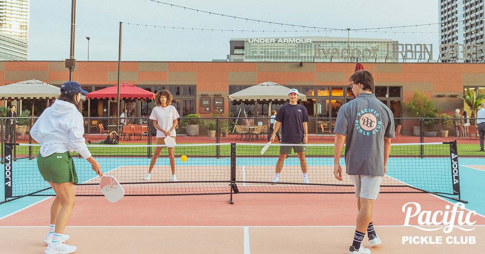
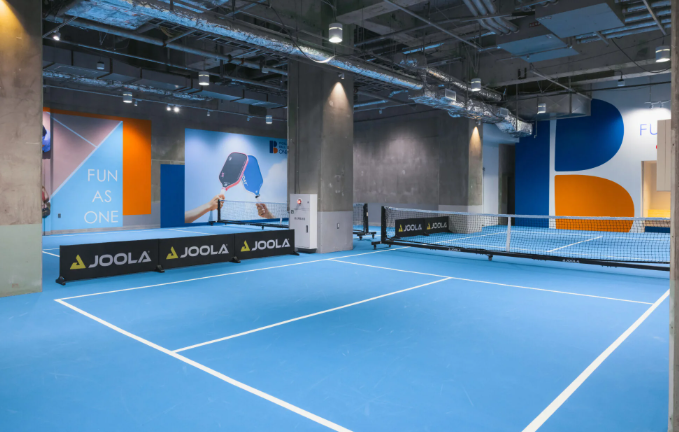
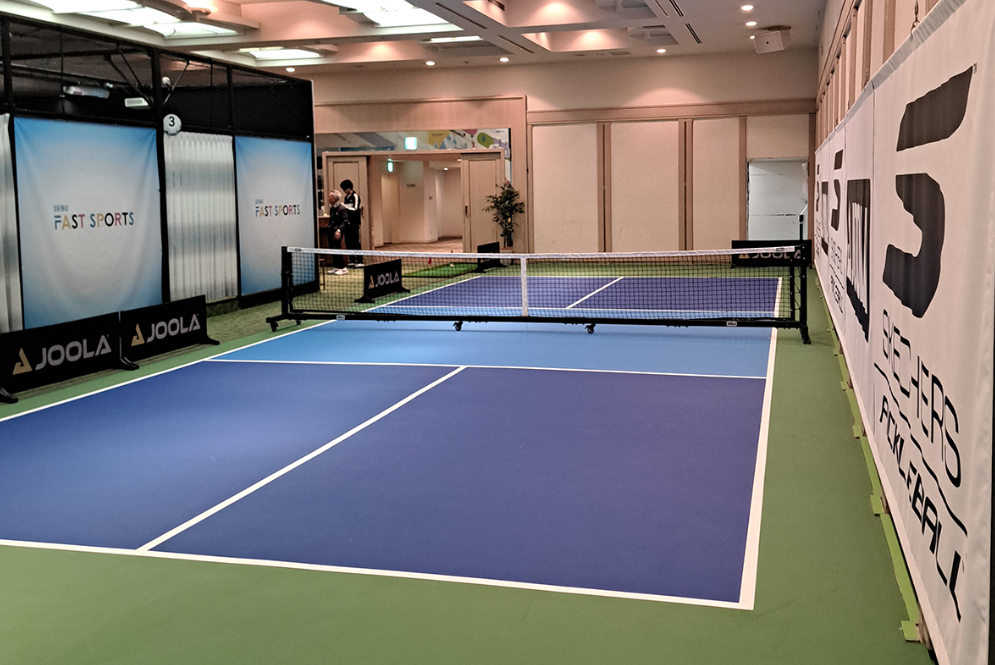
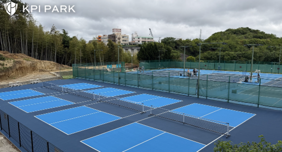

Pacific PICKLE CLUB
@東京タワー
Tokyo
Outdoor
東京タワーの真下という特別なロケーションで、都心にいながら開放感たっぷりにプレーできます。
昼は青空、夜はライトアップされた東京タワーを眺めながら楽しめる、東京ならではの一面です。
予約する →
📍 Google Map

Pacific PICKLE CLUB
@有明
Tokyo
Outdoor
東京湾の空と風を感じながらプレーできる人気コート。
開放感が気持ちよく、週末に行きたくなる場所です。
予約する →
📍 Google Map


SEIBU FAST SPORTS FIELD 品川
@品川
Tokyo
Indoor
アクセス抜群。
仕事帰りにも寄りやすく、練習にもゲームにも使いやすいです。
予約する →
📍 Google Map
